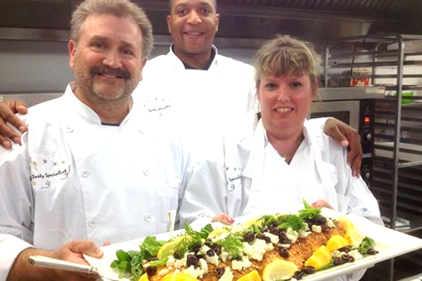
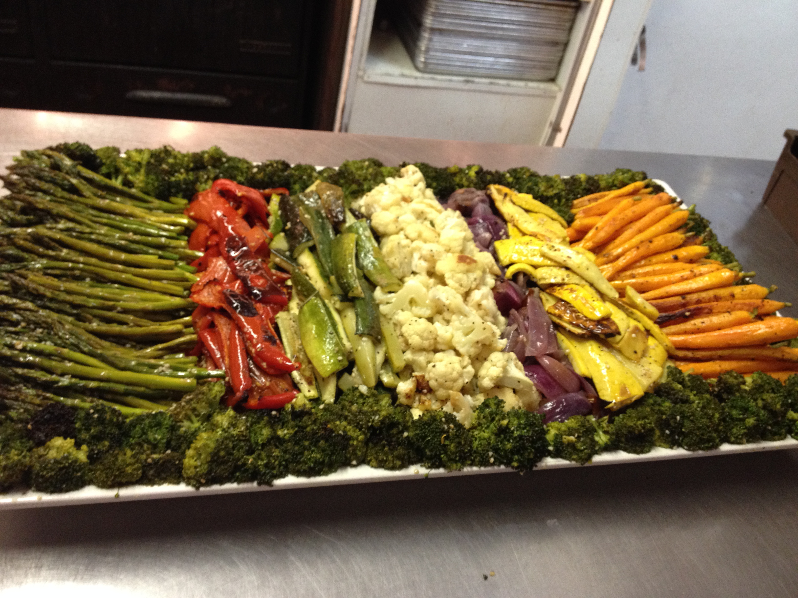

Serving Boston's North Shore Since 1979
Every menu custom. Every detail considered. Every event unforgettable.
From intimate dinners to 3,000-guest galas, Bruce Silverlieb and his team of 40+ years bring your vision to life with gourmet cuisine, creative flair, and flawless execution.
Check Date Availability View Sample MenusWhy Choose Us
Since 1979, The Party Specialist has built its reputation on one simple principle: treating every party as though it were the most important event we have ever done.

Every menu is created specifically for you, factoring in your style, preferences, season, budget, and venue. No two events are ever the same.
From linens to lighting, florals to floorplans, we handle every detail so you can enjoy your event as a guest at your own party.

Kosher, gluten-free, halal, vegan, and allergy-safe options. Our entire team is certified in Food Allergy Awareness.
The Process
Share your vision, guest count, venue, and date. We'll listen carefully and start imagining the possibilities.
We'll design a tailored menu and event plan based on your style, dietary needs, season, and budget.
Sample your menu, fine-tune every detail, and finalize the plan. Your feedback shapes the final experience.
Our team of 40+ years handles setup, service, and breakdown. You enjoy every moment.
Client Love
"The thing we heard the most was that people had never been to a bat mitzvah where the food was so delicious and the dinner so spectacular! The smoothie bar was a huge hit, the lamb chops were the best we've ever had, and when a friend asked for the recipe to the bean salad, you brought her a whole container to go!"
Elana Amaral
Bat Mitzvah, June 2019
"The Food was spectacular. Your servers and staff were all so lovely and warm and hardworking. The farm tables, rustic bar, whiskey barrel cocktail tables and bistro lighting all looked wonderful. Please don't even think of retiring before my next son's bar mitzvah in 3 years!"
Lisa
Bar Mitzvah, June 2019
"I have enjoyed every minute of working with you and Tammy to create 3 Amazing parties for my girls. Your staff goes above and beyond to make sure the guests are well taken care of. I had several guests point out their servers and comment on how attentive, friendly, and helpful they were."
Lesley and Larry Sugarman
Three Bat Mitzvahs, Sept. 2018
As Featured In
Service Area
Swampscott, Marblehead, Salem, Beverly, Manchester-by-the-Sea, Gloucester, Rockport, Ipswich, Newburyport, Danvers, Peabody, Lynn, and throughout Greater Boston. Experienced with tented events, private homes, synagogues, country clubs, and unique venues.
Tell us about your event and we'll create something extraordinary together.
Check Date Availability (781) 592-0988